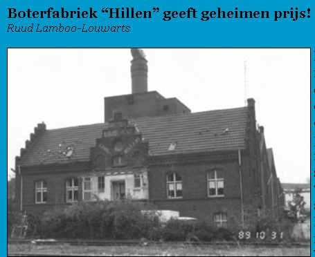
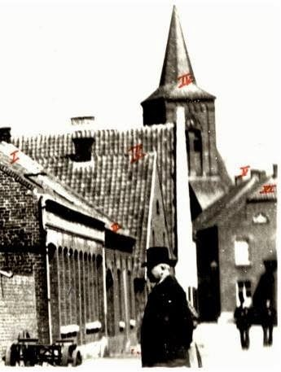
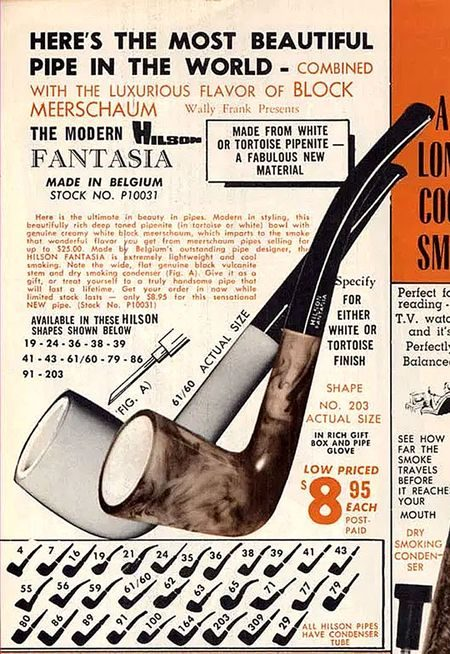
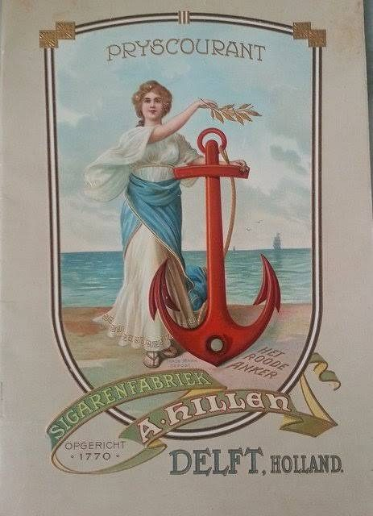
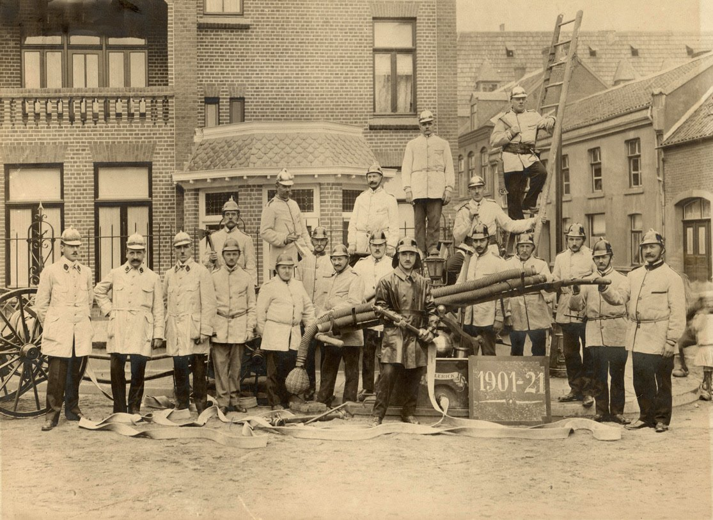

Familiedossier
Artikelen
Vier ondernemingen die de familie Hillen door de eeuwen heen dreef — van een 18e-eeuwse sigarenfabriek tot een 19e-eeuwse ijzergieterij — en het portret van een Hillen die in Blerick overal een hand in had.

De Boterfabriek Hillen-Verbruggen
Een geveilde suikerfabriek, een Blerickse familie die de sprong waagt, en een pand dat via Moutfabriek Limburgia tot op de dag van vandaag overeind staat.
Lees het verhaal →
De IJzergieterij van Johan Hillen
Stoommachines, landbouwwerktuigen en een verschoven Maasbrug — het verhaal van een fabriek die generaties lang van vader op zonen ging.
Lees het verhaal →
De Pijpenfabriek van Bree: Knoedgen → Hillen → Hilson
Via een huwelijk kwam een van de laatste twee heidepijpenfabrikanten van de Benelux in handen van de familie Hillen — met een politicus als bijvangst.
Lees het verhaal →
A. Hillen’s Sigaren- en Tabaksfabrieken
Van een pand ‘het Rode Anker’ aan de Oude Delft tot bijna 700 werknemers en een winkelketen van meer dan 120 filialen door heel Nederland.
Lees het verhaal →
Louis Hillen, de man van Blerick
Pijpenimporteur, twintig jaar brandweerman, veertig jaar kerkbestuur en wethouder: een vrijgezel die overal bij was.
Lees het verhaal →